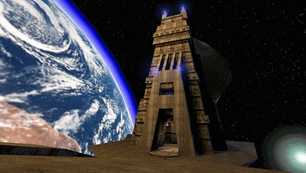
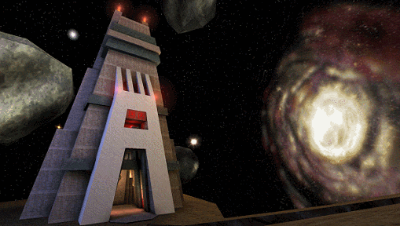

Unreal Tournament
Publisher: GT Interactive (NA Windows, Linux, DC), Infogrames (EU Windows, PS2), MacSoft (Mac)
Developer: Epic Games, Digital Extremes, Secret Level / SEGA Studios San Francisco (DC), Loki Entertainment Software (Linux), Westlake Interactive (Mac)
Platform: Windows, Mac, Linux, Dreamcast, PlayStation 2
Year: 1999 (Windows, Linux), 2000 (Mac, NA PS2), 2001 (DC, EU PS2)